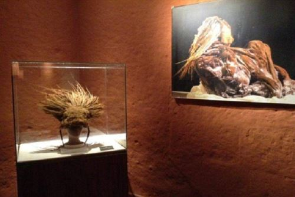

Museo Santuarios Andinos: Guardianes de la historia inca
El Museo Santuarios Andinos de Arequipa es reconocido por albergar a la famosa Momia Juanita, una de las mejores conservadas del mundo. Este museo ofrece una mirada fascinante a los rituales incas y a los sacrificios humanos en la época prehispánica.
Historia
Fundado en 1996, el Museo Santuarios Andinos exhibe hallazgos arqueológicos de alta montaña descubiertos en el nevado Ampato. Su colección principal incluye objetos ceremoniales y vestimentas incas, con la Momia Juanita como su mayor atracción.

Horarios y Ubicación
- Ubicación: Calle La Merced 110, Arequipa, Perú.
- Horarios de visita: Martes a sábado de 9:00 a.m. a 5:00 p.m. / Domingo de 9:00 a.m. a 3:00 p.m.
- Costo de entrada: Entrada general: S/ 20, Estudiantes: S/ 10.
Consejos para Visitantes
- Realiza una visita guiada: La información proporcionada por los guías enriquece la experiencia.
- Evita el uso de flash: La iluminación fuerte puede dañar las piezas arqueológicas.
- Visita temprano: Para evitar aglomeraciones y disfrutar mejor del recorrido.
- Respeta las normas del museo: No tocar las exhibiciones y mantener el orden.
- Aprovecha la cercanía a otros atractivos: Está ubicado en el centro histórico, ideal para combinar con otras visitas.